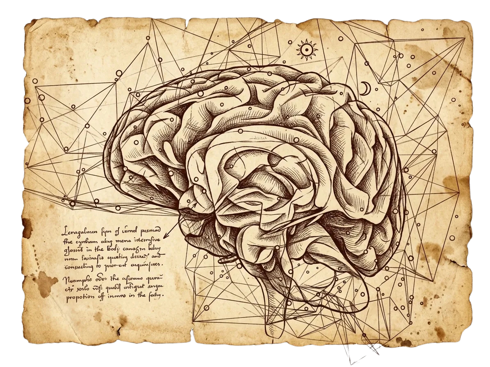
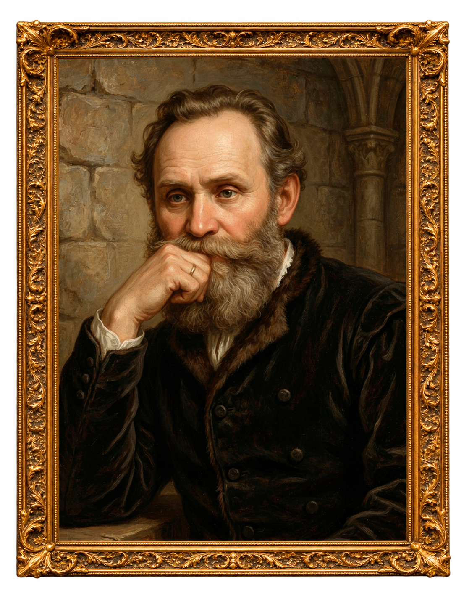

Ao acordar, escolher o que comer,
lembrar de um compromisso, estudar ou praticar algum esporte, o cérebro está
trabalhando.
Conhecer como ele funciona é um primeiro passo para cuidar
melhor dele, lidar com adversidades, promover o sentimento de bem-estar e
alcançar nossos objetivos de vida.

Neurociência
Bilhões de neurônios
Bilhões de neurônios
se conversam e criam
quem você é
Ivan Pavlov e o Condicionamento Clássico
A neurociência comportamental estuda como o cérebro e o sistema nervoso se relacionam com o que sentimos, aprendemos e fazemos. Um de seus grandes marcos veio na década de 1890, quando o fisiologista russo Ivan Pavlov percebeu que cães passavam a salivar só de ouvir um som que antecedia a comida: era o condicionamento clássico, a prova de que o cérebro aprende por associação a sons, imagens e experiências passadas. O termo "neurociência" se consolidou nos anos 1960.
Década de 1890 · Ivan Pavlov · Condicionamento clássico